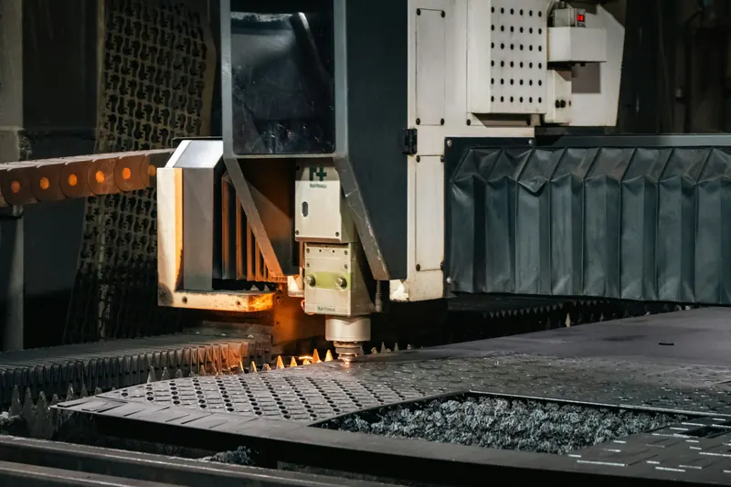

Guide · Design
Micro-joints and bridges: how parts come out of the sheet
Micro-joints in laser cutting are tiny uncut segments that hold the part in the sheet until it is unloaded. They stop small parts tipping or falling, but they leave a mark on the edge. Here you can see when they appear and how to allow for them.

What is a micro-joint in laser cutting?
A micro-joint (also called a micro tab, tab or bridge) is a very short stretch of the outline that the laser leaves uncut. The part stays attached to the sheet skeleton at that point and is separated afterwards, by hand or with a tool.
You don't draw it. Whoever programs the cut adds it, depending on the size and shape of each part.
Why are micro-joints left?
The sheet rests on a slat bed. A large part sits across several slats and doesn't move. A small or narrow part, once loose, can tilt or fall between the slats.
- So it doesn't tip up. A part that lifts can hit the head. OSH Cut cites this as a risk to the equipment.
- So it doesn't fall. Parts that drop under the bed can be damaged or lost.
- So it doesn't move. If the part shifts during cutting, the following outlines end up out of position.
- To unload the whole sheet. With the parts held, the sheet is removed in one go and they are separated afterwards.
An article in Fabricating & Metalworking on TRUMPF's technique explains that the problem mainly affects parts a few inches across or smaller. 247TailorSteel and OSH Cut agree: large parts don't normally need them; small ones do.
Nesting also plays a part. The more small parts fit on a sheet, the more outlines are left loose at the end of the cut, and the more important it is that they don't move.
How big is a micro-joint?
It depends on the material, the thickness and the size and shape of the part. Few sources give figures:
| Source | What it says |
|---|---|
| LaserBoost | From 0.1 to 1 mm depending on material thickness |
| 247TailorSteel | No figure: depends on the material, the thickness and the size and shape of the part |
| TRUMPF (nano joints) | Its "nano joint" technique leaves only about 30 % of the thickness at the bottom edge |
These are each company's own data, not measurements of our machines. Cutting programs let you set the size by material and thickness.
How many are placed and where is also decided by the cutting program. CAM programs let you enable micro-joints only on outlines below or above a certain size. 247TailorSteel explains that the operator adds only the essential ones and that they are placed at the start point of the cutting path.
The mark it leaves and how to remove it
When the part is separated, a small nub or burr is left at the joint. TRUMPF acknowledges that conventional micro-joints leave visible damage on the outline that is corrected by hand. 247TailorSteel warns that there may be marks and burrs, and that parts may have micro-joints even if you don't want them.
A file, a sander or a grinder is enough to remove it. SendCutSend, which offers this as a service, uses belt sanders, orbital sanders and grinders, and warns that the area may still show some mark.
- If the part is going to be painted, remove the mark first: paint does not hide it.
- If the edge will be visible or has to butt up against another part, say so, so the joint can be placed elsewhere.
- There are alternatives. OSH Cut by default uses a lead-in method below the outline that leaves a small notch instead of a nub. TRUMPF has a minimal-joint technique that reduces finishing. These are methods of each company or machine manufacturer.
Micro-joints and design bridges are not the same
A micro-joint is temporary: it breaks when the part is removed. A bridge is part of the design and stays: the piece that holds the centre of an O on a sign, or the ribs of a screen.
A bridge has to withstand the heat of cutting. Ponoko recommends a width equal to the sheet thickness, and LaserBoost publishes a table of minimum bridges by thickness. The values, compared, are in minimum hole, slot and bridge.
For letters and signs, see sheet metal letters. For perforated panels, sheet metal screens.
How to mention it in your order
- Don't draw the micro-joints: send the complete, closed outline.
- In the notes, state the visible face and the edges where you don't want a mark.
- If the parts are going to be painted or welded, say so: it changes where the joint is best placed.
- If you have a drawing, mark the no-mark areas on the PDF. 247TailorSteel, for example, lets you indicate the start point on the drawing.
When we review the file we tell you whether your parts will have micro-joints and where. Request a quote and we reply within 24 working hours.
Frequently asked questions
Can I order parts without micro-joints?
Say so in the notes. Large parts don't usually need them; small parts may, and we tell you when we review the file.
Do I have to draw the micro-joints in the DXF?
No. Draw the closed outline; micro-joints are added in the cutting program.
Does the micro-joint affect the part's dimensions?
It leaves a small nub or burr at one point on the edge. It is removed with a file or grinder.
What is the difference between a micro-joint and a bridge?
The micro-joint breaks when the part is removed. The bridge is part of the design and stays in the part.
Sources
- 247TailorSteel · Micro-joints in laser cutting
- 247TailorSteel · Can micro-joints be avoided?
- OSH Cut · Understanding micro-joints
- TRUMPF · Less waste in laser cutting (nano joints)
- Fabricating & Metalworking · Nano joints in laser cutting
- SendCutSend · What tabs are and how they are removed
- LaserBoost · Laser cutting design guide (Spanish)
- Ponoko · Designing for laser-cut metal
- Kinetic · Microjointing in PrimeCut (CAM)
Updated: 28 October 2026